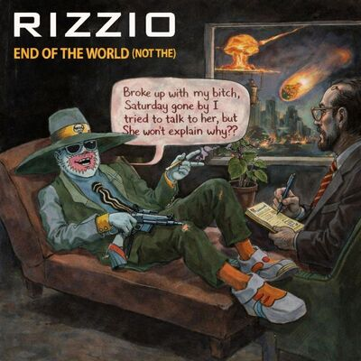

RIZZIO DISCOGRAPHY
VOLUME I — 1994
The origin point of the Rizzio mythos. Establishes the seductive–satirical voice,
the early persona fractures, the first appearance of Sally, and the foundational
numerology codes that echo through the trilogy.
1. GIRL CALLED SALLY 3:05

2. IN A FUNNY WAY I DON'T FEEL SORRY YOU'RE GETTING WHAT YOU SERVED 3:48
3. BBRAND NNEW PPLAYER 2:41

4. END OF THE WORLD (NOT THE) 5:35

5. MOTORWAY MAN 5:17

6. MY MISSES 3:21

7. LIKE THOSE LOVELY GIRLS SAY 2:54

8. BIG BOOTY BITCHES, SLUTTY SLAGS AND HORNY HOES 5:00

VOLUME II — 1995
The universe widens: more women, more masks, more surrealism. Sir Rizz and The Rizla
rise into prominence. Motifs deepen. Geography becomes symbolic terrain. The catalog
begins looping back on itself.
9. I’LL GET MINE IN YO' HOME 2:52
10. WE’RE GLAD YOU’RE HERE 3:43

11. SIX O’CLOCK 2:22

12. WANTON STREAK 4:56

13. CUMMIN’ ROUND HER MOUNTAIN 4:51

14. DIRTY OLD MAN IN A RAINCOAT 1:17
15. AROUNDAWAY 4:47

VOLUME III — 1996
The myth reaches its apex. Persona layering becomes ritual. Numerology becomes prophecy.
The catalog closes its loop, transforming Rizzio from performer into myth‑maker.
16. DESPERATE TIMES 5:03

17. KNOW THA GAME 5:14

18. C DA REAL 4:41

19. PLAYTIME 4:13

20. U GET ME 4:39

21. BANGIN' 4:22

22. YOU’RE GOIN’ DOWN YOU SLAGG 4:58